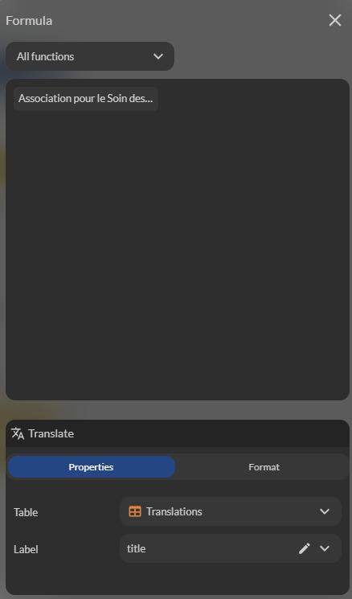

Traductions
La traduction d'une application est un �l�ment cl� pour toucher un public international et offrir une exp�rience utilisateur personnalis�e.
Cette documentation vous guide �tape par �tape pour mettre en place un syst�me de traduction multilingue dans votre application.
Utiliser la table "Translations" pour les libell�s
Pour g�rer les traductions, Zyllio propose une table pr�d�finie nomm�e Translations. Cette table se trouve dans l'onglet Database et contient d�j� des exemples de libell�s traduits pour vous aider � d�marrer.
Structure de la table Translations
La table Translations est organis�e comme suit :
- Premi�re colonne : Le nom du libell�. Chaque libell� doit �tre unique et repr�sente le texte que vous souhaitez afficher dans votre application.
- Colonnes suivantes : Chaque colonne repr�sente une langue, selon la norme ISO (par exemple:
frpour le fran�ais,enpour l'anglais,espour l'espagnol, etc.). Ces colonnes contiennent les traductions du libell� correspondant.
Exemple de table Translations
| Nom du libell� | fr | en | es |
|---|---|---|---|
| welcome_message | Bienvenue | Welcome | Bienvenido |
| button_submit | Soumettre | Submit | Enviar |
| error_not_found | Non trouv� | Not found | No encontrado |
Remplissez cette table avec les libell�s et leurs traductions pour toutes les langues prises en charge par votre application.

Exemple de table Translations
Utiliser la formule Translate dans les composants
Une fois la table Translations compl�t�e, vous pouvez int�grer les traductions dans votre application � l'aide de la formule Translate. Cette formule est utilis�e dans les composants d'affichage (comme les textes, les boutons, etc.) pr�sents sur vos �crans.
Propri�t�s de la formule "Translate"
- Table des traductions : R�f�rencez la table Translations.
- Nom du libell� : Indiquez le nom du libell� tel qu'il est d�fini dans la premi�re colonne de la table.

Utilisation de la formule Translate
Lorsque l'application est lanc�e, la langue de l'utilisateur est automatiquement d�tect�e. Cela signifie que si l'utilisateur a configur� son appareil en fran�ais, les libell�s en fran�ais seront affich�s par d�faut. Si la langue de l'utilisateur n'est pas prise en charge, la premi�re langue d�finie dans la table Translations sera utilis�e.